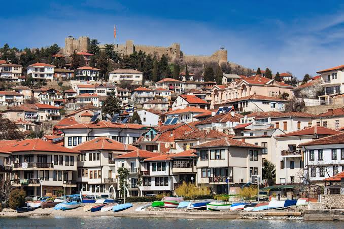
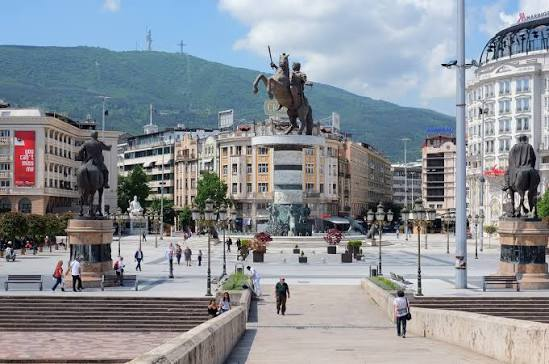
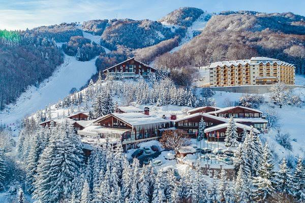
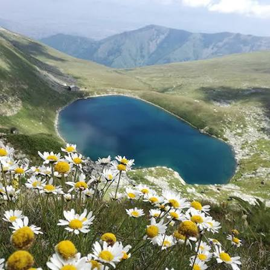
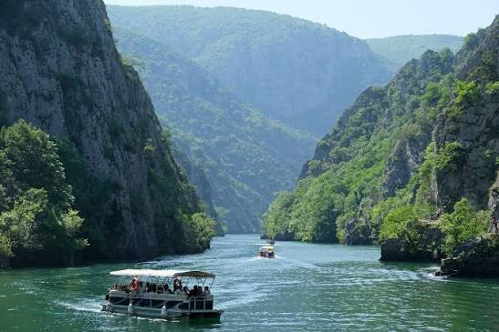
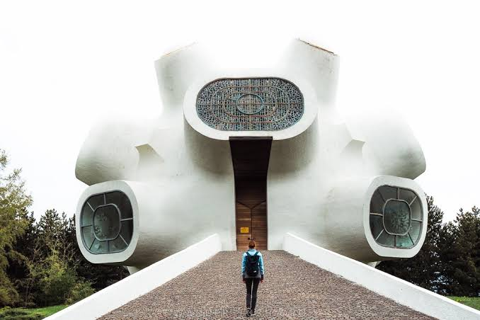
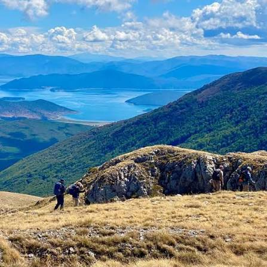

10 Places You Must Visit in Macedonia

1. Ohrid
Explore the beautiful Lake Ohrid, its historic churches, old town and amazing views.

2. Skopje
Visit the capital city, discover the Old Bazaar, Stone Bridge and Kale Fortress.

3. Bitola
Walk along Shirok Sokak and discover the rich history and architecture of this beautiful city.

4. Resen
Discover Saraj, enjoy the peaceful atmosphere and explore the nearby Prespa region.

5. Struga
Enjoy the beautiful river Drim, the lake and the relaxing atmosphere of this town.

6. Mavrovo
Visit the national park, enjoy mountain landscapes and explore the famous sunken church.

7. Pelister National Park
Discover beautiful mountain trails, forests and the famous Pelister Eyes lakes.

8. Matka Canyon
Explore the canyon, enjoy boat rides and discover its impressive natural scenery.

9. Krusevo
Visit one of the highest towns in the Balkans and enjoy its traditional architecture and views.

10. Galicica National Park
Enjoy spectacular views of Lake Ohrid and Lake Prespa from the beautiful mountain landscapes.